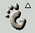

Основы
Пользование панелью крайне просто и не вызовет никаких затруднений у пользователей, которые когда-либо имели дело с операционными системами, снабженными графическим интерфейсом. Вы можете добавить новые панели или добавить приложения и апплеты к существующей панели. Все эти - и многие другие - возможности обсуждаются в этом разделе.
Главное меню
Чтобы запустить одно из стандартных приложений, щелкните на кнопку главного меню. Эту кнопку легко отличить по стилизованному изображению отпечатка ноги; исходно она расположена в левом нижнем углу экрана. После щелчка следует отпустить кнопку, что даст вам возможность воспользоваться другими возможностями GNOME, такими, как перетаскивание объектов меню и щелчки правой кнопкой мыши.
Рисунок 4-1. Кнопка главного меню

Главное меню служит отправной точкой для запуска всех приложений на вашем компьютере. Позднее будет объяснено как можно изменить главное меню, но пока давайте пользоваться меню, которое GNOME предоставляет по умолчанию. Главное меню работает так же, как и любое другое меню в большинстве графических рабочих сред: при нажатии на кнопку главного меню появляется меню, в котором вы можете выбрать любой из пунктов.
Как спрятать панель
Вы можете спрятать панель GNOME в любой момент, нажав на кнопку сокрытия
Рисунок 4-2. Кнопка сокрытия

При нажатии на эту кнопку панель GNOME исчезнет, "спрятавшись" внутрь кнопки сокрытия. Эти кнопки есть с обоих концов панели, так что вы можете спрятать панель GNOME в любом направлении. Чтобы восстановить панель, нажмите на кнопку сокрытия еще раз.
Вы также можете настроить панель таким образом, чтобы она автоматически пряталась, когда ею не пользуются. Это может быть полезным при работе с низким разрешением экрана. Информацию о том, как этого добиться, можно найти в Гл. 7.